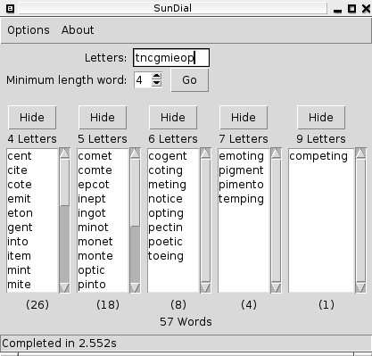

sundial
A solver for the sundial word problem typically encountered in the Sun(UK) Newspaper
sundial is free software licensed under the MIT license
- You must provide the letter that is required to appear in every word as the first character in the Letters entry field.

Caveats
- Only ever run on Linuxx, you'll definately need to provide an alternative dictionary file on Windows systems
- Only looks for a dictionary at /usr/share/dict/words (most debian derivatives have this), if there isn't one there you'll be asked to locate it.
- Nice and quick upto 9 character combinations, OK on 10, you'll have to wait on 11, any more and you're on your own.
sundial2.py
A command line version Golfed down to 5 lines.... Not pretty!
For this you provide positional arguments
- letters with the first letter being the one required to appear in every word
- The minimum word length to solve
If you want to change the dictionary file in this youll have to edit sundial2.py